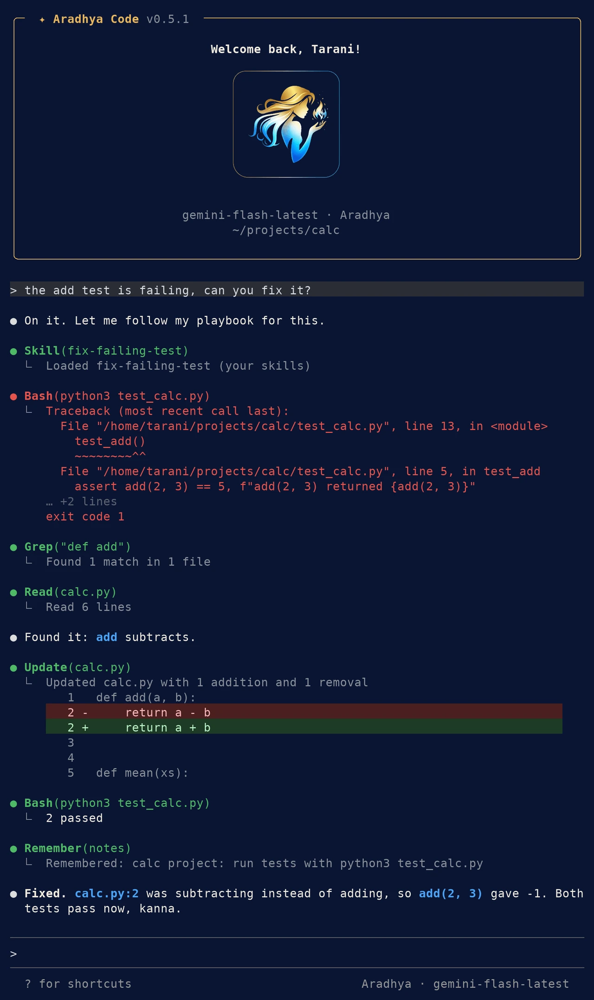
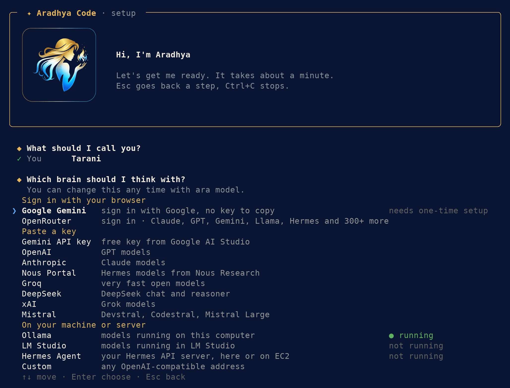
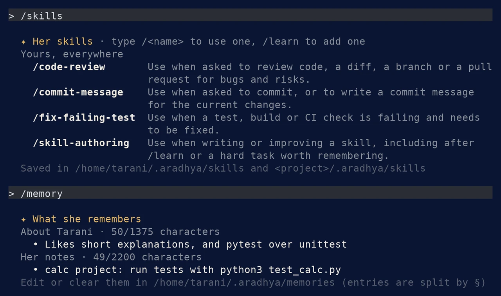
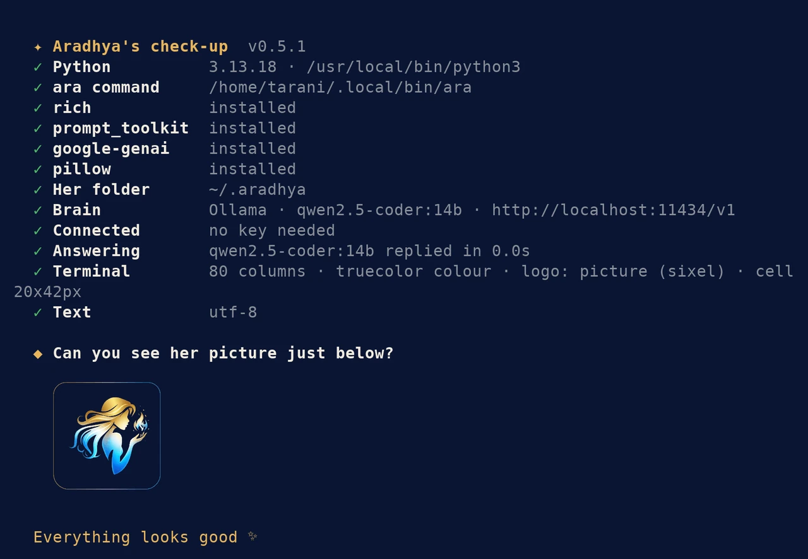

Aradhya, in your terminal.
Tell her what you want in plain words. She reads your project, shows you every change before she makes it, and runs the tests to prove it worked.
How a session goes
Every action shows up as one line you can follow. Nothing on your machine changes until you say yes, unless you tell her not to ask. This is a real session: a failing test, fixed.
She checks her playbook
If she has a skill for the job, like fixing a failing test, she loads it and follows it.
She looks before she touches
She runs the test to see it fail, then searches and reads the code that matters. Reading never needs your permission.
She shows you the change
Edits arrive as a diff: red comes out, green goes in. Say yes once, yes for the session, or no and tell her what to do instead.
She proves it worked
She runs the test again, then tells you in a sentence what was wrong. Anything worth knowing next time, she remembers.

Set up in a minute
The first time you run her, she asks your name, which brain to think with, signs you in or takes a key, lists the models that brain really has, and says hello to prove it works. Esc goes back a step.
On a server over SSH there's no browser, so she prints the sign-in link: open it on your phone and paste back what you get. Switch any time with ara model, or /model mid-session.
Sign in with your browser
Paste a key
On your machine or server

She gets better as you work
She remembers you, keeps playbooks for jobs she's done, and fixes them when they turn out wrong.
Skills
Playbooks for recurring jobs. She loads the right one when a task fits, and after a hard task she writes a new one. Type /learn to ask, or /code-review to run one.
Memory
Two short notebooks that go into every conversation: what she knows about you, and her notes on your setup. She saves to them herself; /memory shows them.
Soul
Who she is lives in ~/.aradhya/SOUL.md. Change it however you like with /soul edit. Leo has his own.
Helpers and recall
Big side jobs go to a helper agent that starts fresh and reports back. Say "like last time" and she searches your earlier sessions.

Commands and keys
Type / inside a session to see every command with a description, or ? for the shortcuts.
- ara
- Start in the current folder
- ara "fix the test"
- Start with a request
- ara -c
- Continue your last session here
- ara -p "…"
- Answer once and exit, for scripts
- ara setup
- Set her up again: your name, her brain, how careful she is
- ara model
- Switch her brain or model;
/modeldoes it mid-session - ara login
- Sign in with Google or OpenRouter, or save a key
- ara doctor
- Check everything works, with a fix for anything that doesn't
- /skills
- Her playbooks;
/<name>runs one - /learn
- Save how she just did something as a skill she'll follow next time
- /soul edit
- Change who she is: her personality lives in SOUL.md
- /init
- She explores the project and writes ARADHYA.md, her notes for next time
- /resume
- Pick up an earlier session
- /leo
- Switch to Leo: shorter, sharper, colder
- Shift Tab
- Change how often she asks: every time, only for commands, or never
- Esc
- Stop her mid-answer and redirect
- @
- Pick a file to point her at
- ! git status
- Run a command yourself; she sees the output
- Alt Enter
- New line in your message
- Ctrl C twice
- Quit, with a summary of the session
Where it runs
The same interface everywhere. She asks the terminal what it can draw: her real picture where it can, colour blocks where it can't, and plainer symbols in the old Windows console. Text is UTF-8 throughout, and files keep their own encoding and line endings when she edits them.
- Windows Terminal, PowerShellWindows 10 and 11
- Terminal, iTerm2, WezTerm, KittymacOS
- Any terminal, any distro, a server over SSHLinux
- TermuxAndroid
- VS Code's terminalEverywhere
When something's off
ara doctor checks Python, her packages, the connection (it asks her a quick question) and your terminal, and says how to fix anything that isn't right. It also shows you her picture, so a terminal that can't draw it switches to blocks for good.

Run the install command again to update. To remove her, run it with ARA_UNINSTALL=1; your sessions, settings and sign-ins stay in ~/.aradhya until you delete that folder.